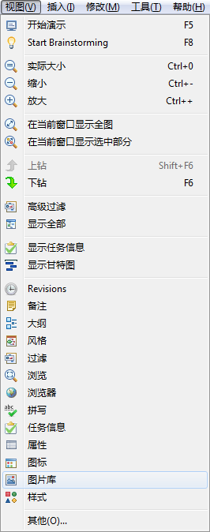
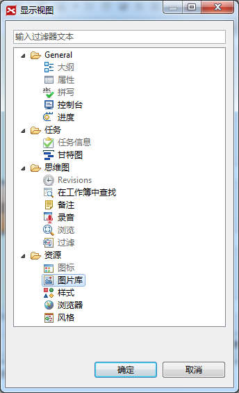

视图在XMIND中有举足轻重的地位与作用。XMIND的所有辅助，以及高级的功能全部需要通过视图的支持来实现。XMIND中有大纲、属性、过滤、备注、样式、风格、录音、图片库、图片搜索、图标和浏览器共11个视图。
您可以可以轻松的打开视图，并且自由地摆放它们的位置。方法如下：
按照下列步骤通过菜单打开需要的视图：
- 在菜单中选择“窗口 > 打开视图”；
- 选择需要的视图；
- 如果没有发现需要的，请点击“其他”显示全部的视图；
- 选择需要的视图。

点击其他可以查看全部的视图 
按照下列步骤摆放视图的位置：
- 选中视图，按住鼠标左键拖动至合适的位置；
- 您还可以将所选视图放置电脑的桌面上。
您可能还对以下内容感兴趣：